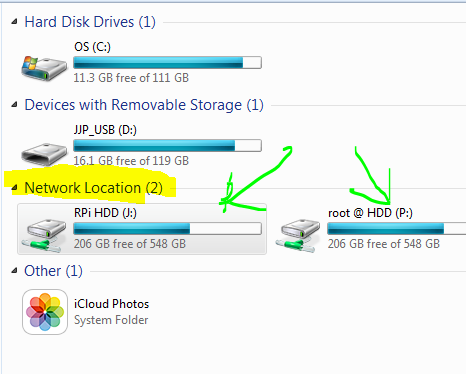

I didn't get to enjoy myself as much during this summer because of college applications and whatnot. Nevertheless, here's a list of some eventful summer moments.
- John
Raspberry Pi Projects |  |
Using my Raspberry Pi Model B mini computer, I completed several home media projects over the summer. I still have a few unfinished projects, but in the meantime, I would love to display some of the projects I've done.
- AirPlay Audio Receiver
- External HDD SAMBA Server
AirPlay Audio Receiver
I connected a pair of speakers to the Raspberry Pi via 3.5mm audio jack. It plays the audio output of a connected iOS or Android device. The screenshot from my Android phone displays a connection to the "AirPi" server.
|
HDD SAMBA Server

Using a program called SAMBA, I am able to share the contents of the connected hard drive via my home LAN. The screenshot from my laptop running Windows 7 shows the mapped Raspberry Pi HDD.
|